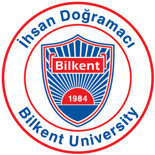

Literature Mining
LLM-driven search of scientific literature to find known RNA binders, binding regions and experimentally validated sites for each target.

Welcome to
/ˌɑːr.ɛn.ˈæt.ləs/
Design, evaluate and visualize RNAs that bind to your target.
CS491/492
The CS491/492 Senior Design Project is a year-long capstone course for senior students of the Computer Engineering Department at Bilkent University. The course bridges the gap between academic knowledge and real-world application by having students work on large-scale projects, often in collaboration with industry partners or research institutions.
Throughout the year, students apply their knowledge of software engineering, algorithm design, artificial intelligence and related fields to build solutions to complex problems. The project is delivered through a series of reports, presentations and a working prototype, giving students hands-on experience in project management, teamwork and technical problem-solving.
To learn more about the CS491/492 Senior Design Project, visit the official course page.
RNAtlas
RNAtlas is an AI-assisted platform for designing, evaluating and visualizing RNA molecules that bind to a selected target: a protein, a DNA region or another RNA. RNA molecules that recognize a specific target are valuable tools in research and therapeutics, but finding or designing a good binder usually means combining scattered literature, several structural biology tools and many rounds of trial and error. RNAtlas brings these steps together into a single, guided workflow.
The process starts with the target. Given one or more target molecules, an LLM-based component searches and processes the scientific literature to find out whether the target is known to bind RNA, which molecules have been reported to bind it, and which regions or residues are involved. When an experimentally known binding site exists, it is used to guide the rest of the pipeline, so the question becomes not just “Can this RNA bind this protein?” but “Can this RNA bind this particular region?” When the literature is silent, binding-site prediction methods are used to propose candidate regions instead.
Next, RNAtlas gathers RNA candidates. Sequences reported in previous studies serve as a strong starting point; when no suitable candidate exists, or when a single RNA must connect to several targets, new sequences are generated with RNA-X. Every candidate, whether known or newly designed, then goes through the same evaluation pipeline: missing 3D structures are predicted, the RNA is docked against its target, and the resulting complex is simulated with molecular dynamics using OpenMM to check whether the interaction stays stable over time rather than looking good only in a single static pose.
The results are presented as an interactive 3D view of the full complex, together with quantitative measurements of binding behavior and stability. Researchers can see not only whether an RNA binds, but where the interaction is strong and where it is weak. Any weak region can be selected and sent back to RNA-X to be redesigned, turning RNAtlas into an iterative design loop that moves from target to literature, from candidate to simulation, and back to an improved RNA.
How it works
The user provides one or more target molecules: a protein, DNA and/or RNA.
An LLM agent searches the literature for known RNA binders, binding regions and interacting residues.
Known candidates are reused; when none exist, new RNA sequences are generated with RNA-X.
Structures are predicted, docked and simulated with OpenMM, then shown in 3D with strong and weak binding regions.
Any weak point can be selected and redesigned to achieve stronger binding.
What RNAtlas offers
LLM-driven search of scientific literature to find known RNA binders, binding regions and experimentally validated sites for each target.
Uses reported binding sites to guide docking, and falls back to binding-site prediction methods when the literature is silent.
Generates new RNA sequences intended to bind the target when no suitable candidate exists in the literature.
Predicts missing structures and docks RNA candidates against their targets to produce candidate complexes and interaction details.
Simulates docked complexes with OpenMM and reports quantitative measures of how stable the interaction stays over time.
Highlights weak or unstable interaction regions in an interactive 3D view and lets the user redesign them for stronger binding.
Documents
Reports, presentations and other project documents are published here as each milestone of the course is completed.